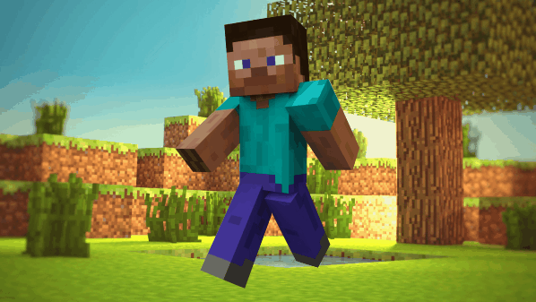

|

Стив и Алекс Вони можуть
Ігровий персонаж (англ. Player character ) - персонаж, яким керує людина під час гри в Minecraft . Два скіна, що використовуються за замовчуванням, відомі як Стів і Алекс . Гравці, що не задали свій скін, будуть використовувати один з цих двох. Зовнішній виглядЗалежно від ідентифікатора облікового запису гравця, ігровий персонаж за замовчуванням буде використовувати стандартний скін Стіва або Алекс. У Стіва темно-коричневе волосся, темний колір шкіри, носа і рота, і сині очі. Він одягнений у блакитну футболку (розправлену з боку лівої руки), сині джинси і сірі черевики. Його руки мають товщину 4 пікселя. У Алекс довгі, світло-руде волосся, блідий колір шкіри, темно-зелені очі і рожеві губи. Вона одягнена в світло-зелену футболку (розправлену з обох сторін і затягнуту темно-зеленим поясом), коричневі штани і сірі черевики. Її руки мають товщину 3 пікселя. Строго кажучи, визначення цих двох скінів як «чоловічого» і «жіночого» не зовсім коректно, тому що відповідно до задуму розробників, в грі Minecraft немає статі, [2] і обидва скіна є узагальненими уявленнями людини. Також Стів - форма «класичного» скіна, а Алекс - форма «тонкого» скіна. Зростання ігрового персонажа - 1,8 блоку, що крадеться ігрового персонажа в Java Edition - 1,5 блоку, який планує, швидко пливе або повзучого ігрового персонажа - 0,6 блоку. Ширина ігрового персонажа - 0,6 блоку. Про АлексаПерсонаж жіночої статі, що замінила гравця Стіва в версії 1.6 на серверах одиночних гравців. Велика войовниця і шукачка пригод. Як і Історія Гравця Стіва її історія не відома, але в машініма ExplodingTNT Стів проти Алекса Ночт сказав Стіву, що той застарів і Гравцям хочеться нового персонажа по жіночий, як Лара Крофт, показує Алекс, Стів побачивши її закохався з першого погляду, Стів від любові навіть не міг говорити, а Алекс вирішила, що той просто ігнорує її і розлютилася на нього, стала Крафт Діамантову броні з зброю і пішла його вбивати, а Стів пішов за подарунком, але Стів такий тупий, що він взяв у місце Губний памади Чернільнік і побіг, щоб подарувати його їй якомога ско реї, Стів від погляду на Алекс відчував любов, а Алекс від погляд на нього тільки один Гнів, в кінці Алекс вбиває Стіва, але в майнкрафт можна і воскреснути, так-що він не помер, він живий, а Алекс отримавши подарунок від Стіва, стала соромитися і теж закохалася в нього. Цікаві факти
|